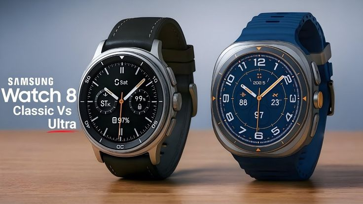
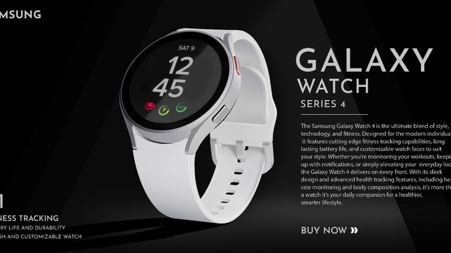
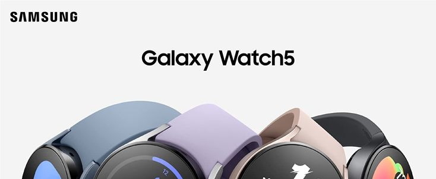

Samsung Galaxy Watch 8
Samsung Galaxy Watch 8 is a premium smartwatch designed for fitness, health monitoring, and everyday connectivity. It features a bright Super AMOLED display, the powerful Exynos W1000 processor, Wear OS 6 with One UI Watch 8, advanced health sensors, GPS, and up to 32GB storage. Its slim and lightweight design, durable sapphire crystal glass, and comprehensive fitness tracking make it an excellent companion for Android users.

Samsung Galaxy Watch 4
Samsung Galaxy Watch 4 is a stylish smartwatch that combines fitness tracking, health monitoring, and smart features in a compact design. It features a Super AMOLED display, Wear OS powered by Samsung, heart rate and blood oxygen monitoring, body composition analysis, GPS, and fitness tracking for various activities. It is a great choice for users looking for a reliable smartwatch for everyday use and health management.

Samsung Galaxy Watch 5
Samsung Galaxy Watch 5 is a premium smartwatch designed for health, fitness, and everyday convenience. It features a durable sapphire crystal display, advanced sleep tracking, heart rate and blood oxygen monitoring, body composition analysis, GPS, and Wear OS powered by Samsung. With improved battery life and fast charging, it is an excellent choice for users who want a reliable smartwatch for both fitness tracking and daily use.